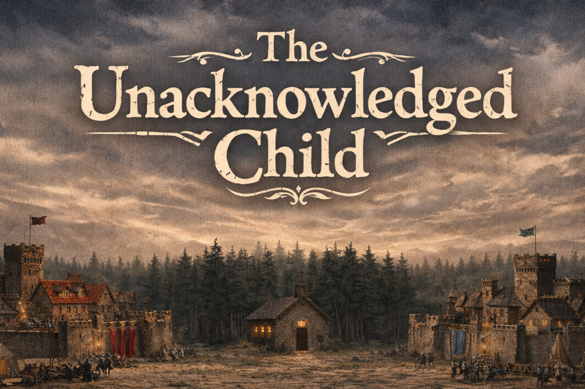

Chapter 4: Leah's Dilemma
The Unacknowledged Child


The Unacknowledged Child
15049.05.21
冒險者們從辯論會場，趕緊回到酒館。槍擊事件後的克萊芬，路上各種暴動。有人大聲叫囂，有人只因顏色不同，就大動拳腳，各樣的塗鴉也開始出現在牆上。
酒館的店小二胡里歐忙得一團亂。看見冒險者們，他建議他們趕緊上樓，回到房間內躲著。酒館一樓雖然沒有外面那麼瘋狂，但氣氛也讓人很緊張。冒險者們聽取了胡里歐的建議，趕緊跑上樓去。
來到大家的房間，中途之家嘗試討論接下來該怎麼辦。然而，陷入混亂的雷亞在房內來回踱步。皮尼歐教授之死對他來說太過震驚。他好不容易相信一個人，願意追隨他，如今他卻⋯⋯而且，雷亞還曾試圖保護好教授，誰知道一個看起來像新書院的追隨者，竟然就這樣霎時間取走了教授的性命。這讓雷亞感到很錯亂。但情緒混亂的不只是雷亞。一進到房間就躲到牆角的瑪莉貝爾狀況明顯不太對勁。冒險者們靠近他，發現他對著牆壁，緊緊抱著⋯⋯那把用來殺害教授的槍械！？
冒險者們試圖安撫瑪莉貝爾，並從他手中取走這個危險的武器。雖然他們不明白這個「器械」到底怎麼作用的，但才射出一發子彈，就要了教授的命，很顯然是個危險的東西。誰知，瑪莉貝爾對此十分敏感，任誰也不給碰這把槍械。他緊緊握在手中，眼神透露出的，不是過往溫和、堅定的模樣，而是充斥著害怕、強硬、無所適從的神情。他牢牢握著那把槍，就像取走他會要了他的命一樣。
「教授他⋯⋯讀了那麼多書，那麼聰明。結果這一發子彈，他的命就沒了。」瑪莉貝爾聲淚俱下。「在武力面前，知識⋯⋯知識就是這麼脆弱嗎？那我過去讀的書、相信的真理，又是什麼？」他跪坐在地上，雙手摀住臉啜泣。毛毛見到瑪莉貝爾的槍掉在地上，悄悄地用他的尾巴將槍盤著，試圖讖瑪莉貝爾不注意時把槍捲走。
鑰透過傳訊術，試圖和被送往診所醫治槍傷的拉比溝通。恍惚的拉比透過鑰的訊息，得知皮尼歐教授遇刺身亡，整座城市陷入動亂。拉比站了起身，發現整間診所的病床都滿了，醫師一人根本無暇顧及他。他撐著虛弱的身體，慢慢走出診所，朝著酒館的路回去。隨著傳訊術的使用次數耗盡，拉比一聲口哨呼叫了他的梟，捎了口信給斷了訊的鑰，說明自己正要走回酒館。
同一時間，酒館二樓的房內，冒險者們討論著接下來應該要先躲在房內，也可以藉機休息。不僅僅是雷亞，其他人也感覺到了在教授死後，站上舞台的新書院秘書長，那位名叫「瓦羅恩」的傢伙，讓人感覺十分可疑。太過順理成章的接班、冷靜到讓人頭皮發麻的言辭，很難讓人相信這齣暗殺事件與他無關。如今，皮尼歐教授理想的新書院已經不在了，外頭僅僅是叫喊著「新曙光」的暴民。縱使討厭利斯達上校的老樹盟，也鄙視彭薩公會長的市民連線，雷亞更覺得現在是「哪邊都不能站」的困境。
終於回到酒館的拉比和房內的冒險者們會面後。他主張先做調查，確認現在城市的態勢，也許去新書院看看。但冒險者們對剛才的事件太過緊繃，想要先休息。最後，拉比採取了折衷的方案：和冒險者們先到隔壁的包廂，也就是一天前他與雷亞目睹利斯達上校與彭薩公會長聚會的包廂，進行調查，然後再休息。
雖然說是酒館的包廂，裡面的環境儼然是長期被私人使用的空間。各種私人物品被放在沙發旁的櫃子裡，桌上還殘留大餐後的油漬，看來是清不太乾淨。毛毛趁機摸走了一組高級餐具，羅羅則撿到了一枚掉落在地上的彈殼。接著，冒險者們便回到房間休息。拉比將他的梟安置在二樓的樓梯口，吩咐他有任何人來到二樓，就要飛來提醒他。接著，拉比靠著門，坐在地上休息，羅羅回到自己的房間睡覺，其他冒險者們則各自入睡。
淺眠中，雷亞在腦中聽見了一個陌生的聲音，對他「嘖」了一聲，然後悄悄說了聲「包廂」。雷亞悄悄站了起來，試圖去包廂看看。擋在門口的拉比也還沒睡著，聽見雷亞的說法後，決定也起身一起去調查。拉比對於他的梟沒有通知他這件事感到疑惑。他走到樓梯口，發現他的梟掉落在地上，身上有個小小的傷口，似乎被注射了什麼藥劑。拉比與雷亞小心翼翼地走到包廂門口，不想重蹈一天前拉比被槍擊的覆轍。小心翼翼推開門，一名身穿紅色軍裝，身材顯瘦的男子看着門口。「雷亞，來談談吧。」他說道。「其他人想進來也可以。」他十分冷靜地說道。雷亞與拉比決定去叫醒其他冒險者們。現在距離入睡時間也頂多一個多小時，大不了接下來睡久一點也罷。
冒險者們一併走入了包廂內。這名男子先自我介紹為立德上尉，是利斯達上校的下屬。他表示自己要來提供雷亞一個提議，雷亞如果不要也罷。接著，他掏出了兩枚白金幣，放在雷亞面前。立德上尉說明了大家心照不宣的事實：如今的新書院，已經不是皮尼歐教授時的模樣了，很顯然，雷亞與冒險者們對他們不再和過去一樣信任新書院了。由於雷亞的身份特殊，是萊斯諾龍人與克萊芬蜥蜴人的混血之子，老樹盟希望雷亞為利斯達上校站台，公開自己的身份，證明萊斯諾與克萊芬的混血之子也可以不用畏畏縮縮地走在克萊芬的路上。雷亞聽聞後，陷入思索。
「而且，雷亞。」立德上尉看著雷亞。「你很想知道關於你父母的事，對吧？」雷亞心頭一陣。關於他的父母，他知道的事情很有限。拉比顯然知道一些事，他的師父柳俠馬許也知道不少，但他不說。但現在，老樹盟願意分享給他⋯⋯
看見雷亞的猶疑，拉比感到憤怒。他一把抓起立德上尉，朝著包廂的窗戶砸去，將上尉丟出窗外。
「雷亞，我給你一天的時間決定。」人不見了，聲音卻還在。冒險者們在剛才立德上尉的座位，翻出了一個機械。「等你決定好了，直接對著這個機器說吧。」
瑪莉貝爾撿起這個發出聲音的裝置，大家一起回到房間內。雷亞內心混亂，他不知道自己應該做什麼決定。理智上，他知道自己不會因為瓦羅恩的關係，倒戈向老樹盟，但他真的很想知道關於自己父母的事。
接近午夜時刻，冒險者們醒來了。依然窩在牆角的瑪莉貝爾突然高喊一聲「我知道他怎麼運作了」。瑪莉貝爾轉身，兩隻手捧著各種器械的零件。看來，原本能拿來和立德上尉通訊的機器，現在也不能運作了。瑪莉貝爾滔滔不絕的分享著他的發現與觀察，不受其他人的毫無反應所影響。
雷亞走向拉比，在他面前將稍早立德上尉遞給他的兩枚白金幣朝窗外丟去，表明了自己的心意。
在拉比的帶領下，冒險者們在與羅羅會合後，一起趁夜出門，留下瑪莉貝爾自己在房間內玩他的器械零件。來到一樓，他們和胡里歐討了一點吃的後，決定讓雷亞化身為狗，藉著嗅聞包廂內的味道，去尋找利斯達上校活動的位置。城市內的味道太複雜，雷亞無法精確判斷方向，最終拉比靠著他記憶中老樹盟活動的據點方向前進，再搭配雷亞的嗅聞。最終，他們看見了前方軍營的柵欄。
冒險者們停在柵欄外不遠處觀察。軍營內傳來利斯達上校酒後的大聲嚷嚷，不特別帶有什麼情緒。不久後，一名精瘦的男子從軍營內走了出來。
「雷亞，你要來給我答案了嗎？」男人發出不久前冒險者們從機械裡聽到的聲音，對著化身為狗的雷亞，定睛看著。
15049.05.21
The adventurers hurried back to the tavern from the debate venue. In the wake of the shooting, Clyphen had erupted into chaos. Some people were shouting in the streets, some were throwing punches over nothing more than differences in color, and all kinds of graffiti had begun appearing on the walls.
Julio, the tavern server, was completely overwhelmed. When he saw the adventurers, he urged them to hurry upstairs and hide in their rooms. The tavern's first floor was not as insane as the streets outside, but the atmosphere was still tense enough to set everyone on edge. The adventurers took Julio's advice and rushed upstairs.
Back in their room, the Halfway Home tried to discuss what to do next. But Leah, thrown into confusion, paced back and forth across the room. Professor Peneo's death had hit her too hard. She had finally found someone he could believe in, someone she was willing to follow, and now she was gone... Worse still, Leah had tried to protect the professor, only to watch someone who looked like a supporter of the New Academy snatch her life away in an instant. It left Leah deeply shaken. Yet Leah was not the only one unraveling. Maribel, who had retreated into a corner the moment she entered the room, was clearly not doing well either. When the adventurers approached her, they saw that she was facing the wall and clutching tightly... the gun used to kill the professor!?
The adventurers tried to calm Maribel down and take the dangerous weapon from her. They did not understand how the "device" worked, but a single bullet had taken the professor's life, so it was obviously something dangerous. Yet Maribel reacted to it with extreme sensitivity and refused to let anyone touch the gun. She gripped it tightly in her hands, and her eyes no longer held their usual gentle resolve, but instead radiated fear, stubbornness, and helpless confusion. She clung to the gun as if taking it away would kill her.
"The professor... she read so many books, hse was so brilliant. And then one bullet, and her life was gone." Maribel wept openly. "In the face of force... is knowledge really this fragile? Then what were all the books I've read, the truths I've believed in?" She sank to her knees and covered her face with both hands, sobbing. When Fur noticed Maribel's gun slip to the floor, he quietly coiled his tail around it, trying to drag it away when Maribel was not paying attention.
Kaname used Message in an attempt to contact Ravi, who had been taken to the clinic to have his gunshot wound treated. In his dazed state, Ravi learned through Kaname's message that Professor Peneo had been assassinated and that the entire city had fallen into turmoil. He got to his feet and found every bed in the clinic occupied, with the lone doctor far too busy to deal with him. Forcing his weakened body onward, he slowly left the clinic and started making his way back to the tavern. Once Kaname's remaining uses of Message had run out, Ravi gave a whistle to summon his owl and sent a reply to Kaname, explaining that he was on his way back to the tavern.
At the same time, upstairs in the tavern room, the adventurers discussed how they ought to stay hidden in the room for now and perhaps use the chance to rest. It was not only Leah who felt it: everyone else had also found the New Academy's secretary general, the woman named Varoen who had stepped onto the stage after the professor's death, deeply suspicious. Her smooth succession and the unnervingly calm way she spoke made it very hard to believe the assassination had nothing to do with her. Professor Peneo's ideal New Academy was gone now, and outside there was only mobs shouting the name "New Dawn." Even though Leah hated the Old Tree Alliance of Colonel Lisdar and also despised President Bonza's Civic Alliance, she now felt trapped in a position where she could stand with neither side.
Once Ravi finally returned to the tavern and reunited with the others in the room, he argued that they should investigate first and confirm what shape the city was currently in, perhaps even go look at the New Academy. But the others were too strung tight from everything that had just happened and wanted to rest first. In the end, Ravi chose a compromise: he and the others would first investigate the private booth next door, the same booth where he and Leah had witnessed Colonel Lisdar and President Bonza meeting the day before, and only then rest.
Though it was technically a tavern booth, the inside looked very much like a space used privately for a long time. Personal belongings had been tucked into the cabinet beside the sofa, and the table still bore greasy stains from an old feast that looked difficult to clean. Fur took the opportunity to swipe a set of fine cutlery, while Roel picked up a spent shell casing from the floor. After that, the adventurers returned to their room to rest. Ravi stationed his owl at the stairway on the second floor and instructed it to fly back and warn him if anyone came upstairs. Then Ravi sat on the floor leaning against the door to rest, Roel returned to his own room to sleep, and the others drifted off as well.
In a light sleep, Leah heard an unfamiliar voice in her mind click its tongue at her and then quietly whisper, "The booth." Leah rose quietly, intending to go see what was there. Ravi, still not fully asleep at the door, heard Leah's explanation and decided to get up and investigate with her. Ravi was puzzled that his owl had not warned him. When he walked over to the stairs, he found his owl lying on the ground with a tiny wound on its body, as if something had been injected into it. Ravi and Leah carefully approached the booth door, unwilling to repeat what had happened the day before when Ravi had been shot. Pushing the door open cautiously, they found a thin man in a red military uniform looking toward the entrance. "Leah, come talk," he said. "The others can come in too, if they want." His tone was calm, unnervingly so. Leah and Ravi decided to wake the others. It had only been a little over an hour since they had gone to sleep anyway, and they could always sleep longer later.
The adventurers all entered the booth together. The man introduced himself as Captain Reid, a subordinate of Colonel Lisdar. He said he had a proposal for Leah, though it was Leah's choice whether to accept it or not. Then he took out two platinum coins and set them in front of Leah. Captain Reid laid out the truth everyone already understood in silence: the New Academy was no longer what it had been under Professor Peneo. Clearly, Leah and the adventurers no longer trusted it the way they once had. Because Leah's identity was special, she was the mixed child of a Leisnor dragonborn and a Clyphen lizardfolk, the Old Tree Alliance wanted Leah to publicly support Colonel Lisdar and reveal her own identity, proving that a mixed child of Leisnor and Clyphen did not need to creep fearfully along the roads of Clyphen. Leah fell into thought.
"And Leah," Captain Reid said, looking straight at him, "you really want to know about your parents, don't you?" Leah's heart clenched. She knew very little about her parents. Ravi clearly knew some things. His master, Marsh the Willow, knew plenty too, but refused to say them. And now the Old Tree Alliance was willing to tell her......
Seeing Leah hesitate, Ravi flew into a rage. He seized Captain Reid and hurled him straight through the booth window.
"Leah, I'll give you one day to decide." The man was gone, but the voice remained. In the place where Captain Reid had been sitting, the adventurers found a device. "Once you've made up your mind, just speak to this machine."
Maribel picked up the speaking device, and everyone returned to the room together. Leah was in turmoil. She had no idea what decision she should make. Rationally, she knew she would not defect to the Old Tree Alliance just because of Varoen. But she truly did want to know about her parents.
Near midnight, the adventurers woke up. Maribel, still curled into the corner, suddenly cried out, "I know how it works now." She turned around with both hands full of scattered mechanical parts. Apparently the machine that had been used to contact Captain Reid earlier no longer functioned. Maribel launched into an endless stream of discoveries and observations, entirely unaffected by the others' lack of response.
Leah walked up to Ravi and, in front of him, threw the two platinum coins Captain Reid had given her out the window, making her feelings clear.
Led by Ravi, the adventurers met up with Roel and slipped out into the night together, leaving Maribel alone in the room to play with her machine parts. Once downstairs, they begged a little food from Julio, then decided that Leah would transform into a dog and use the scent lingering in the booth to track down where Colonel Lisdar had been active. The city's smells were far too complicated for Leah to pinpoint a direction precisely, so in the end Ravi relied on his memory of where the Old Tree Alliance usually operated, with Leah's nose guiding him along the way. Eventually, they came upon the fence of a military camp ahead.
The adventurers stopped a short distance from the fence and observed. From inside the camp came the loud drunken shouting of Colonel Lisdar, not clearly attached to any particular emotion. Before long, a lean man stepped out of the camp.
"Leah, have you come to give me your answer?" the man asked. It was the same voice the adventurers had heard coming from the machine not long before, and he stared directly at Leah in her dog form.